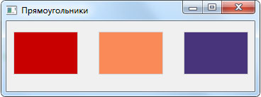

На этом шаге мы перечислим методы, используемые для рисования линий и фигур.
После захвата контекста рисования следует установить перо и кисть. С помощью пера производится рисование точек, линий и контуров фигур, а с помощью кисти - заполнение фона фигур. Установить перо позволяет метод setPen() класса QPainter. Форматы метода:
setPen(<QPen>) setPen(<QColor>) setPen(<Стиль пера>)
Для установки кисти предназначен метод setBrush(). Форматы метода:
setBrush(<QBrush>) setBrush(<Стиль кисти>)
Устанавливать перо или кисть необходимо перед каждой операцией рисования, требующей изменения цвета или стиля. Если перо или кисть не установлены, будут использоваться объекты с настройками по умолчанию. После установки пера и кисти можно приступать к рисованию точек, линий, фигур, текста и др.
Для рисования точек, линий и фигур класс QPainter предоставляет следующие наиболее часто употребляемые методы (полный их список доступен на странице https://doc.qt.io/qt-5/qpainter.html):
- drawPoint () - рисует точку. Форматы метода:
drawPoint(<X>, <Y>) drawPoint(<QPoint>) drawPoint(<QPointF>)
- drawPoints () - рисует несколько точек. Форматы метода:
drawPoints(<QPoint 1>[, ..., <QPoint N>) drawPoints(<QPointF 1>[, ..., <QPointF N>) drawPoints(<QPolygon>) drawpoints(<QPolygonF>)
- drawLine () - рисует линию. Форматы метода:
drawLine(<QLine>) drawLine(<QLineF>) drawLine(<QPoint>, <QPoint>) drawLine(<QPointF>, <QPointF>) drawLine(<X1>, <Y1>, <X2>, <Y2>)
- drawLines () - рисует несколько отдельных линий. Форматы метода:
drawLines(<QLine 1>[, ..., <QLine N>) drawLines(<QLineF 1>[, ..., <QLineF N>]) drawLines(<Список с экземплярами класса QLineF>) drawLines(<QPoint 1>[, ..., <QPoint N>]) drawLines(<QPointF 1>[, ..., <QPointF N>])
Замечание. В документации по PyQt5 также заявлена поддержка форматов:Однако при попытке вызвать метод drawLines() с их использованием выдается сообщение об ошибке. Возможно, это ошибка в самой библиотеке.drawLines(<Список с экземплярами класса QLine>) drawLines(<Список с экземплярами класса QPoint>) drawLines(<Список с экземплярами класса QPointF>)
- drawPolyline () - рисует несколько линий, которые соединяют указанные точки. Первая и последняя точки не соединяются. Форматы метода:
drawPolyline(<QPoint 1>[, ..., <QPoint N>]) drawPolyline(<QPointF 1>[, ..., <QPointF N>]) drawPolyline(<QPolygon>) drawPolyline(<QPolygonF>)
- drawRect () - рисует прямоугольник с границей и заливкой. Чтобы убрать границу, следует использовать
перо со стилем NoPen, а чтобы убрать заливку- кисть со стилем NoBrush. Форматы метода:
drawRect(<X>, <Y>, <Ширина>, <Высота>) drawRect(<QRect>) drawRect(<QRectF>)
- fillRect () - рисует прямоугольник с заливкой без границы. Форматы метода:
fillRect(<Х>, <Y>, <Ширина>, <Высота>, <Заливка>) fillRect(<QRect>, <Заливка>) fillRect(<QRectF>, <Заливка>)
<Заливка> может быть задана экземплярами классов <QColor>, <QBrush>, в виде стиля кисти или атрибута цвета;
- drawRoundedRect () - рисует прямоугольник с границей, заливкой и скругленными краями. Форматы метода:
drawRoundedRect(<X>, <Y>, <Ширина>, <Высота>, <Скругление по горизонтали> <Скругление по вертикали> [, mode = Qt::AbsoluteSize]) drawRoundedRect(<QRect>, <Скругление по горизонтали>, <Скругление по вертикали> [, mode = Qt::AbsoluteSize]) drawRoundedRect(<QRectF>, <Скругление по горизонтали>, <Скругление по вертикали> [, mode = Qt::AbsoluteSize])Параметры <Скругление по горизонтали> и <Скругление по вертикали> задают радиусы скругления углов по горизонтали и вертикали. Необязательный параметр mode указывает, в каких единицах измеряются радиусы скругления углов, и задается одним из следующих атрибутов класса Qtcore.Qt:
- AbsoluteSize (или 0) - радиусы указываются в пикселях;
- RelativeSize (или 1) - радиусы указываются в процентах от соответствующего размера рисуемого прямоугольника;
- drawPolygon () - рисует многоугольник с границей и заливкой. Форматы метода:
drawPolygon(<QPoint 1>[, ..., <QPoint N>) drawPolygon(<QPointF 1>[, ..., <QPointF N>]) drawPolygon(<QPolygon>[, fillRule=OddEvenFill]) drawPolygon(<QPolygonF>[, fillRule=OddEvenFill])
Необязательный параметр fillRule задает алгоритм определения, находится ли какая-либо точка внутри нарисованного прямоугольника или вне его. В качестве его значения указывается атрибут OddEvenFill (или 0) или WindingFill (или l) класса QtCore.Qt;
- drawEllipse () - рисует эллипс с границей и заливкой. Форматы метода:
drawEllipse(<Х>, <Y>, <Ширина>, <Высота>) drawEllipse(<QRect>) drawEllipse(<QRectF>) drawEllipse(<QPoint>, <int rX>, <int rY>) drawEllipse(<QPointF>, <float rX>, <float rY>)
В первых трех форматах указываются координаты и размеры прямоугольника, в который необходимо вписать эллипс. В двух последних форматах первый параметр задает координаты центра, параметр rX - радиус по оси х, а параметр rY - радиус по оси Y;
- drawArc () - рисует дугу. Форматы метода:
drawArc(<X>, <Y>, <Ширина>, <Высота>, <Начальный угол>, <Угол>) drawArc(<QRect>, <Начальный угол>, <Угол>) drawArc(<QRectF>, <Начальный угол>, <Угол>)
Следует учитывать, что значения углов задаются в значениях 1/16°. Полный круг эквивалентен значению 5760 = 16 * 360. Нулевой угол находится в позиции "трех часов". Положительные значения углов отсчитываются против часовой стрелки, а отрицательные - по часовой стрелке:
- drawChord () - рисует замкнутую дугу. Аналогичен методу drawArc(), но соединяет
крайние точки дуги прямой линией. Форматы метода:
drawChord(<X>, <Y>, <Ширина>, <Высота>, <Начальный угол>, <Угол>) drawChord(<QRect>, <Начальный угол>, <Угол>) drawChord(<QRectF>, <Начальный угол>, <Угол>)
- drawPie () - рисует замкнутый сектор. Аналогичен методу drawArc(), но соединяет крайние точки дуги
с центром окружности. Форматы метода:
drawPie(<X>, <Y>, <Ширина>, <Высота>, <Начальный угол>, <Угол>) drawPie(<QRect>, <Начальный угол>, <Угол>) drawPie(<QRectF>, <Начальный угол>, <Угол>)
При выводе некоторых фигур (например, эллипса) контур может отображаться в виде "лесенки". Чтобы сгладить контуры фигур, следует вызвать метод setRenderHint() и передать ему в качестве единственного параметра атрибут Antialiasing класса QPainter. Пример:
painter.setRenderHint(QtGui.QPainter.Antialiasing)
В заключение приведем пример программы, выводящей графическую информацию, снабженную небольшими комментариями (программа взята отсюда: https://pythonworld.ru/gui/pyqt5-painting.html). Как видно из нее, все методы рисования вызываются из метода paintEvent() и располагаются между методами begin() и end() объекта класса QPainter().
import sys from PyQt5.QtWidgets import QWidget, QApplication from PyQt5.QtGui import QPainter, QColor, QBrush class Example(QWidget): def __init__(self): # super() - запуск конструктора-родителя super().__init__() self.initUI() # Главный метод def initUI(self): self.setGeometry(300, 300, 350, 100) self.setWindowTitle('Прямоугольники') self.show() def paintEvent(self, e): qp = QPainter() qp.begin(self) self.drawRectangles(qp) # Рисование фигур qp.end() def drawRectangles(self, qp): col = QColor(0, 0, 0) col.setNamedColor('#d4d4d4') qp.setPen(col) # Установка карандаша qp.setBrush(QColor(200, 0, 0)) # Установка кисти qp.drawRect(10, 15, 90, 60) # Рисование прямоугольника qp.setBrush(QColor(255, 80, 0, 160)) qp.drawRect(130, 15, 90, 60) qp.setBrush(QColor(25, 0, 90, 200)) qp.drawRect(250, 15, 90, 60) app = QApplication(sys.argv) ex = Example() sys.exit(app.exec_())
Результат работы приложения изображен на рисунке 1.

Рис.1. Результат работы приложения
На следующем шаге мы рассмотрим вывод текста.